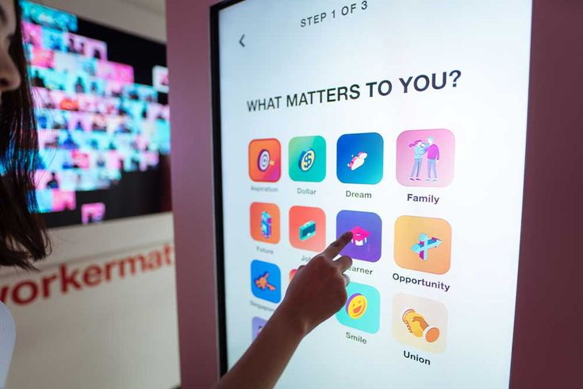

La Influencia De La Psicología En La Señalética Virtual
¿Cómo Juegan Con Nuestra Mente?
El comportamiento y las respuestas del usuario ante la señalización virtual son influenciados por diversos factores psicológicos, desde el procesamiento visual hasta las emociones generadas por la experiencia de uso.
1. Aspectos clave de cómo los usuarios responden a las señales virtuales:
1. Respuestas Emocionales: Las señales visuales tienen el poder de evocar respuestas
emocionales inmediatas. Por ejemplo, una alerta visual brillante en rojo puede generar una sensación
de urgencia o alarma, mientras que un diseño limpio y minimalista con colores suaves puede crear una
experiencia más relajante y controlada. Las emociones del usuario impactan directamente en la
percepción de la experiencia general; un diseño que sea agradable y visualmente coherente puede
generar una mayor satisfacción, mientras que un diseño confuso o sobrecargado puede generar
frustración y ansiedad.
2. Comportamiento de Navegación: La señalización virtual influye de manera significativa en
cómo los usuarios navegan a través de una plataforma o aplicación. Las señales claras y directas
guiarán a los usuarios de manera eficiente, mientras que una señalización confusa o mal diseñada
puede hacer que los usuarios abandonen la plataforma o experimenten dificultades al realizar tareas.
La psicología cognitiva señala que los usuarios prefieren interacciones que sigan patrones
predecibles y lógicos, por lo que la señalización debe estar alineada con las expectativas del
usuario.
3. Confianza y Comodidad: Los usuarios tienden a confiar más en plataformas con interfaces
que les resultan familiares y fáciles de entender. Un diseño coherente y familiar en la señalización
virtual genera confianza, mientras que un diseño inusual o confuso puede crear desconfianza. La
respuesta del usuario ante las señales virtuales, entonces, está muy relacionada con la sensación de
control y confort que experimentan al interactuar con la interfaz.

4. Impacto en la Decisión y Acción: La señalización virtual también puede influir
directamente en la toma de decisiones del usuario. La psicología del comportamiento muestra que las
señales visuales pueden guiar las decisiones al reducir la cantidad de información que el usuario
necesita procesar antes de actuar. Los botones de llamada a la acción (CTAs) deben ser diseñados
para resaltar y proporcionar una sensación de urgencia o relevancia, de modo que los usuarios
sientan que es el momento adecuado para tomar una acción.
5. Aprendizaje y Adaptación: Los usuarios tienden a aprender rápidamente cómo interactuar
con señales visuales repetidas, lo que implica que la señalización debe ser consistente a lo largo
del tiempo. A medida que los usuarios se familiarizan con los patrones de la interfaz, su respuesta
se vuelve más automática y fluida. Los diseñadores pueden aprovechar este fenómeno de adaptación al
asegurarse de que las señales se presenten de manera consistente y predecible, facilitando el
proceso de aprendizaje.
2. La Psicología y el Diseño de la Señalización Virtual: Principales Conceptos
Percepción Visual y la Ley de la Gestalt:
La psicología de la percepción humana,
especialmente los principios de la Gestalt, tiene una gran influencia en cómo los diseñadores de
señalización virtual estructuran los elementos visualesLos principios de la Gestalt, como la
proximidad, la similitud, la continuidad y el cierre, son claves para que el usuario interprete
correctamente la señalización sin necesidad de un esfuerzo consciente.
• Proximidad: Los elementos relacionados visualmente deben estar cerca unos de otros. Esto
ayuda a que los usuarios reconozcan patrones y relaciones rápidamente, como cuando los íconos de
navegación están agrupados en un menú.
• Similitud: Usar colores o formas similares en elementos relacionados, como botones de
“confirmar” y “cancelar”, refuerza la idea de que esos elementos tienen una función similar.
• Cierre: Los usuarios tienden a completar formas incompletas, lo que puede ser aprovechado
en la creación de iconos o señales que sugieren una acción o dirección.
La psicología juega un papel crucial en el diseño de la señalización virtual, ya que las decisiones de diseño no solo afectan la funcionalidad, sino también la forma en que los usuarios perciben y responden a la interfaz. Al entender cómo los usuarios procesan visualmente los elementos, cómo perciben el color y las formas, y cómo toman decisiones basadas en la señalización, los diseñadores pueden crear experiencias más intuitivas, agradables y eficaces. El conocimiento de la psicología detrás del diseño de señalización permite crear interfaces que no solo guían a los usuarios, sino que también mejoran su experiencia emocional y cognitiva, resultando en una interacción más satisfactoria y fluida.